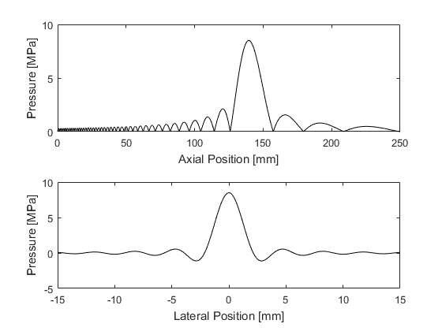

focusedBowlONeil
Compute O'Neil's solution for focused bowl transducer.
Syntax
[p_axial, p_lateral] = focusedBowlONeil(radius, diameter, velocity, frequency, sound_speed, density, axial_position, lateral_position); [p_axial, p_lateral, p_axial_complex] = focusedBowlONeil(radius, diameter, velocity, frequency, sound_speed, density, axial_position, lateral_position);
Description
focusedBowlONeil calculates O'Neil's solution (O'Neil, H. Theory of focusing radiators. J. Acoust. Soc. Am., 21(5), 516-526, 1949) for the axial and lateral pressure amplitude generated by a focused bowl transducer when uniformly driven by a continuous wave sinusoid at a given frequency and normal surface velocity.
The solution is evaluated at the positions along the beam axis given by axial_position (where 0 corresponds to the transducer surface), and lateral positions through the geometric focus given by lateral_position (where 0 corresponds to the beam axis). To return only the axial or lateral pressure, set the either axial_position or lateral_position to [].
Note, O'Neil's formulae are derived under the assumptions of the Rayleigh integral, which are valid when the transducer diameter is large compared to both the transducer height and the acoustic wavelength.
Example:
% define transducer parameters radius = 140e-3; % [m] diameter = 120e-3; % [m] velocity = 100e-3; % [m/s] frequency = 1e6; % [Hz] sound_speed = 1500; % [m/s] density = 1000; % [kg/m^3] % define position vectors axial_position = 0:1e-4:250e-3; % [m] lateral_position = -15e-3:1e-4:15e-3; % [m] % evaluate pressure [p_axial, p_lateral] = focusedBowlONeil(radius, diameter, velocity, ... frequency, sound_speed, density, axial_position, lateral_position); % plot figure; subplot(2, 1, 1); plot(axial_position .* 1e3, p_axial .* 1e-6, 'k-'); xlabel('Axial Position [mm]'); ylabel('Pressure [MPa]'); subplot(2, 1, 2); plot(lateral_position .* 1e3, p_lateral .* 1e-6, 'k-'); xlabel('Lateral Position [mm]'); ylabel('Pressure [MPa]');
Inputs
radius |
transducer radius of curvature [m] |
diameter |
diameter of the circular transducer aperture [m] |
velocity |
normal surface velocity [m/s] |
frequency |
driving frequency [Hz] |
sound_speed |
speed of sound in the propagating medium [m/s] |
density |
density in the propagating medium [kg/m^3] |
axial_position |
vector of positions along the beam axis where the pressure amplitude is calculated [m] |
lateral_position |
vector of positions along the lateral direction where the pressure amplitude is calculated [m] |
Outputs
p_axial |
pressure amplitude at the positions specified by axial_position [Pa] |
p_lateral |
pressure amplitude at the positions specified by lateral_position [Pa] |
p_axial_complex |
complex pressure amplitude at the positions specified by axial_position [Pa] |
See Also
focusedAnnulusONeil, mendousse